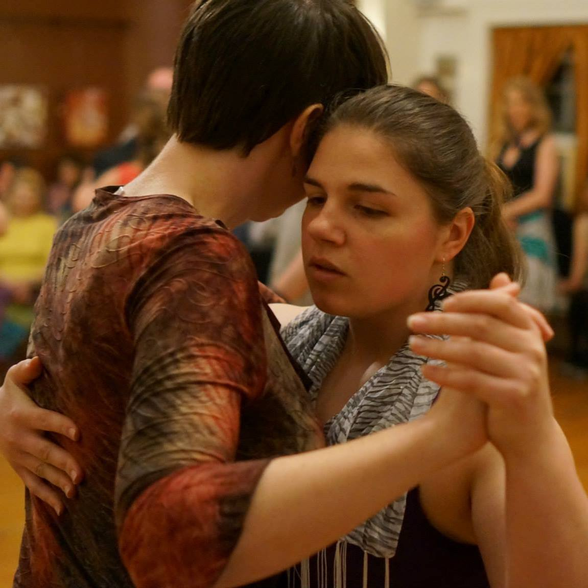

Philly Queer Tango is the brainchild of Lauren Onorato and Karen Johnson. Both active members of the Philadelphia tango community, they sought out opportunities to interact with the queer community via tango and couldn't find any locally. Drawing inspiration from NYC Queer Tango and a book called the Queer Tango Project (available online for free at queertangobook.org ) they began brainstorming with Sangha Space studio owner and veteran tango dancer/instructor Lori Coyle to develop a tango event specifically for the greater queer and allied community. They hope to create a more welcoming atmosphere for anyone who feels like traditional dance is too strictly gendered and straight-oriented, and to diversify the larger tango community with bold, confident, out-of-the-box dancers.
Lauren has been involved with the Philadelphia area tango community for about 3 years. She started dancing at Sangha Space because it was one of the few places she could find where women could learn to lead. She's a champion of alternative and accepting tango and is regarded as one of the best tango leaders at most local tango events. Leading other women in tango helped Lauren come to terms with her own queer identity, and now she's a great teacher and role model for both leaders and followers. Her teaching style is kind, clear, and informational. Lauren will be the primary teacher for the workshop, although she will work with Karen and other more experienced dancers to provide examples and contrasts.
Karen joined the tango community in 2015, but is a long-time queer activist and organizer. She spent two years as the president of her college QSA, planning, organizing, and budgeting for large scale, inclusive events by and for the queer community, and has since spent a great deal of time on grassroots organizational efforts out in the larger queer and allied community. She loves to use tango to challenge gender norms and explore her own gender and sexuality. Karen will offer guidance and assistance during the workshop, and she is very focused on creating a safe and accepting space for all.